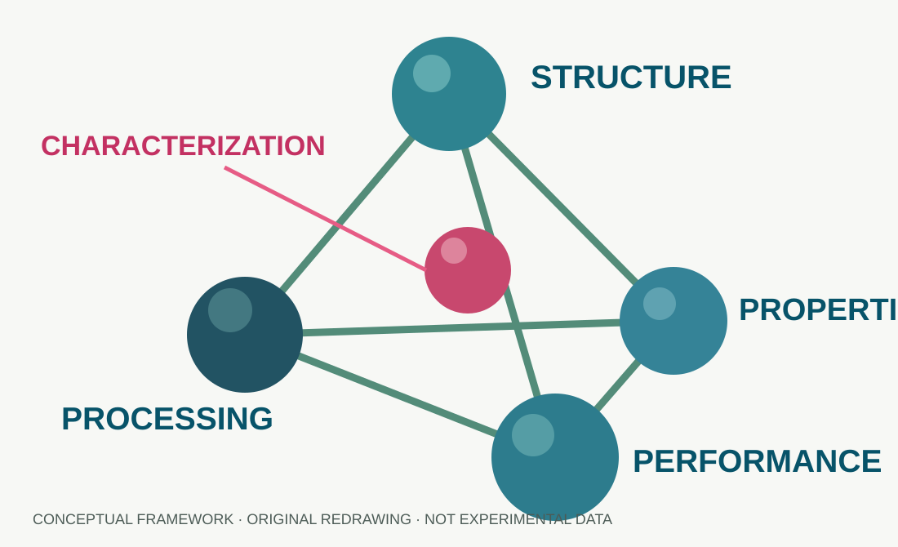

RESEARCH OVERVIEWMy work spans material formulation, device fabrication, mechanical characterization, and analysis of structure–property relationships. At UC San Diego's ARMOR Lab, I investigated carbon-nanotube-based flexible strain sensors, with a focus on their electromechanical response and potential integration in motion tracking and soft robotics.
01. Flexible electronics & human motion
Graduate Student Researcher · ARMOR Lab, UC San Diego · Oct 2025–Jun 2026. Designed and fabricated CNT-based flexible electronic devices; examined nanocomposite architecture, interface mechanics, and electrical response; and performed cyclic mechanical, electrical, and reliability testing. Analyzed sensor data using MATLAB and collaborated on motion-capture and soft-robotic integration.
CNT compositesStrain sensingInterface mechanicsElectromechanical responseMotion captureSoft robotics

FIG. 1 — A conceptual framework for investigating functional materials. Original illustration; not experimental data.
02. Functional materials for manufacturing
Research Assistant Intern · Fujian Institute of Research on the Structure of Matter, Chinese Academy of Sciences · Mar–Jul 2024. Developed materials for 3D printing and protective coatings through structured experiments; coordinated lab materials and purchasing; benchmarked manufacturing approaches and relevant industry standards; and translated findings into practical guidance for industry collaborators.
03. Rubber systems & mechanical response
Research Project Group Leader · Fujian Key Laboratory of Polymers, Fujian Normal University · Mar 2023–Mar 2024. Led the formulation and synthesis of rubber materials for automotive shock absorbers, focusing on resilience, dynamic load absorption, and wear resistance. Compared material formulations with industrial benchmarks; prepared a technical paper and poster; and defended the research thesis.
Selected publications
- Li, D., Lin, S., Hao, J., He, B., Zhang, H., & Chen, M. (2023). “A Rigid–Flexible and Multi-Siloxane Bridge Strategy for Toughening Epoxy Resin with Promising Flame Retardancy, Mechanical, and Dielectric Properties.” International Journal of Molecular Sciences.
- Huang, H., Zhu, D., Ahmed, A., Liang, A., Yang, Y., He, B., Li, X., et al. (2024). “Superhydrophilic and Underwater Superoleophobic Hydrogel-Loaded Fabrics for Enhanced Oil/Water Separation.” Polymer.
- Zhu, D., Huang, H., Liang, A., Yang, Y., He, B., Ahmed, A., Li, X., et al. (2024). “Synthesis of Amphiphilic Polyacrylates as Peelable Coatings for Optical Surface Cleaning.” Materials.